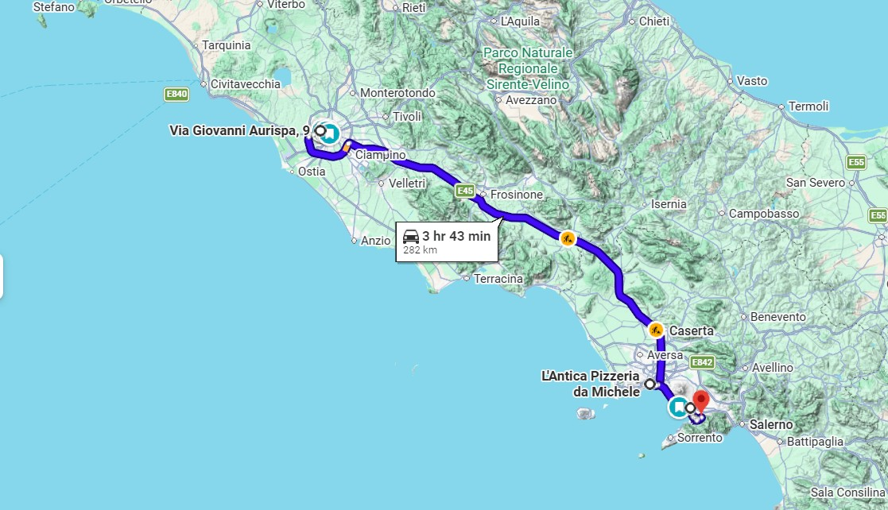
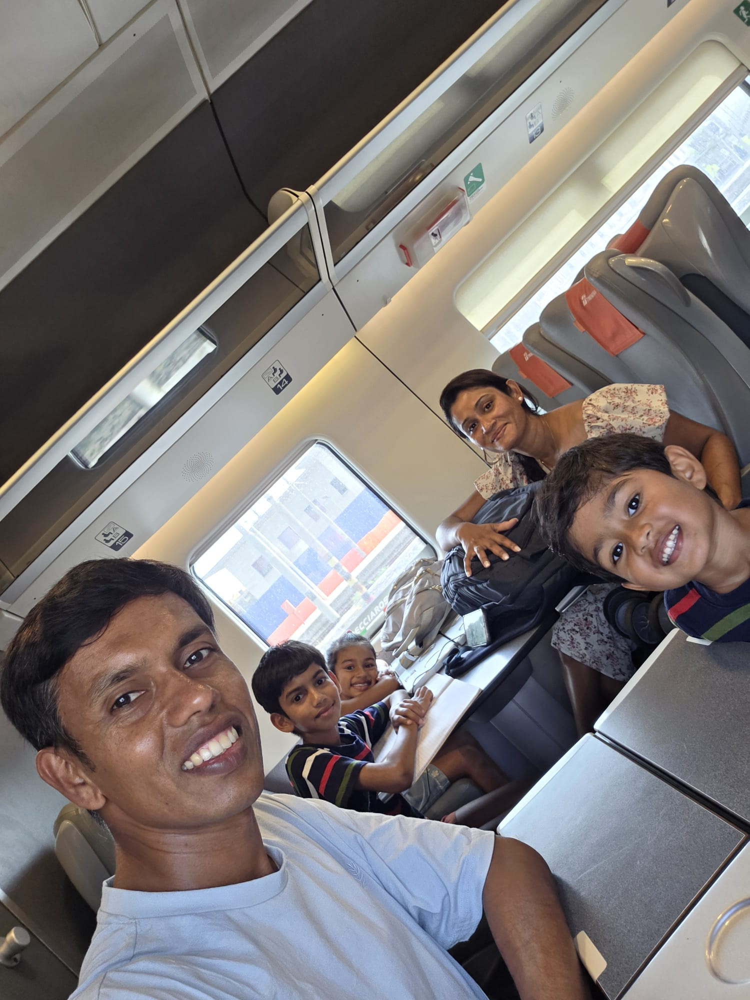
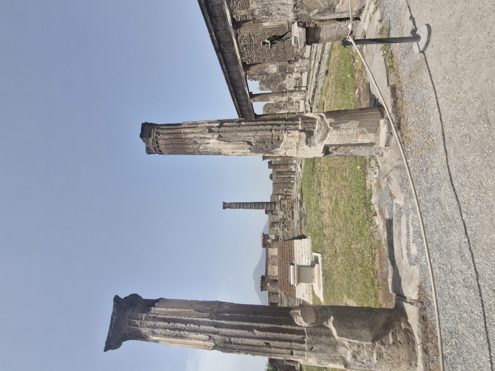
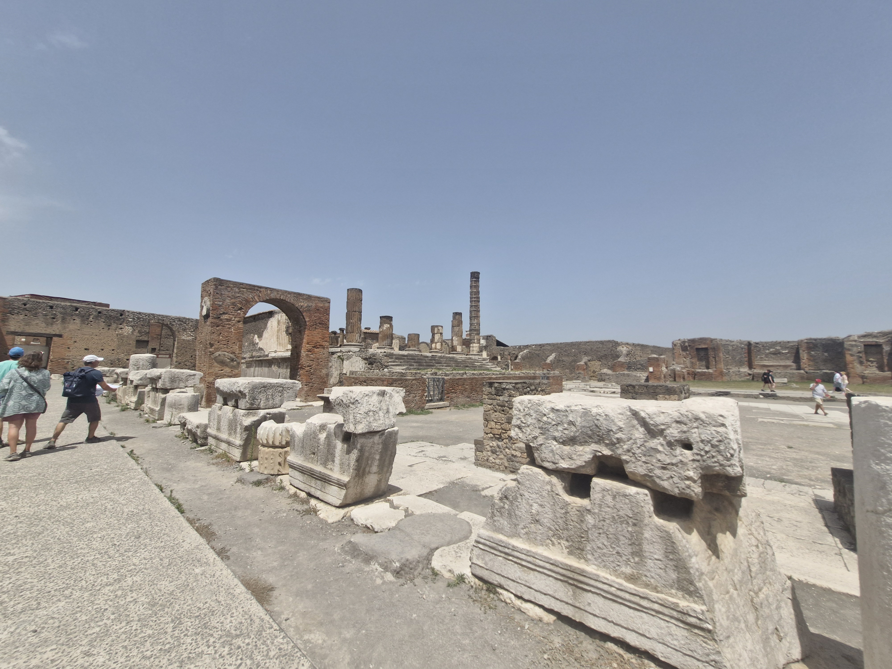
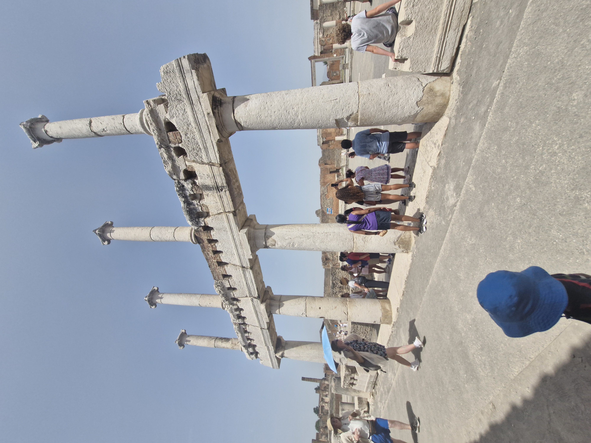
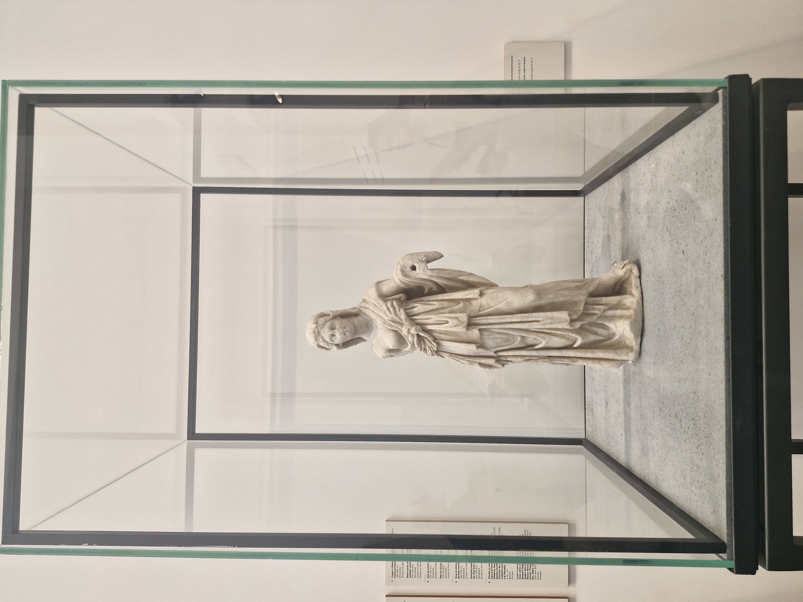
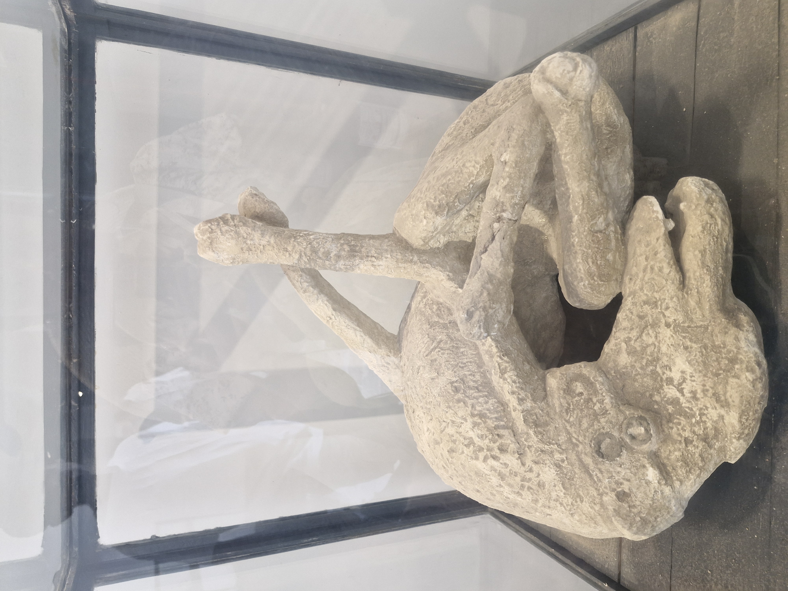
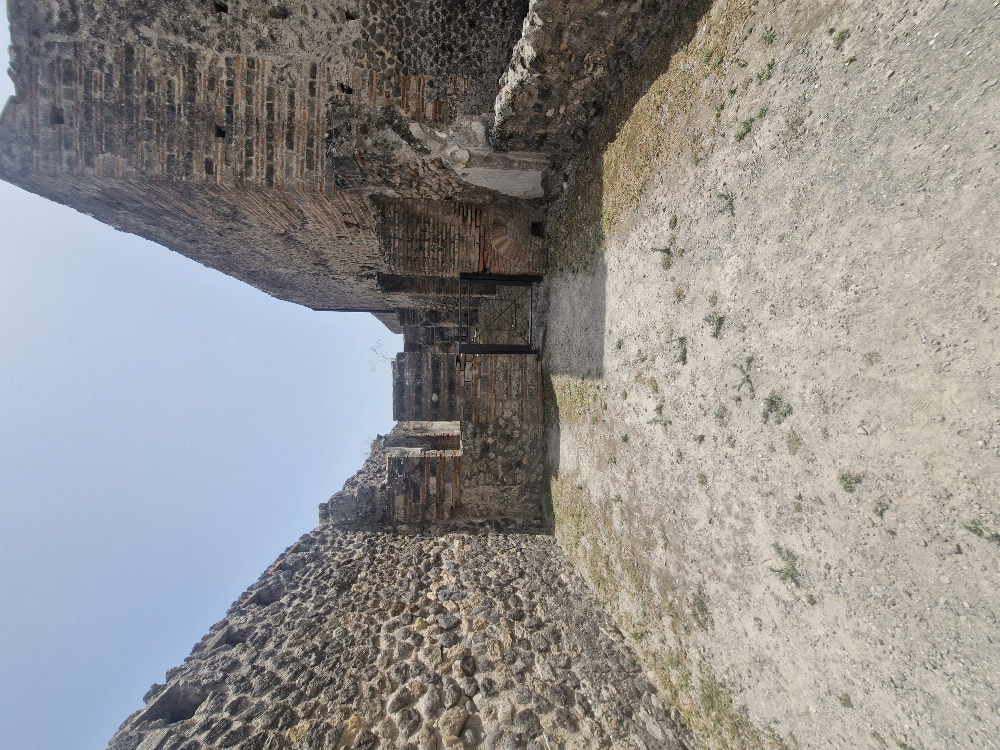

Two thousand years ago, Pompeii was a bustling Roman town of some 15,000 people — merchants, bakers, politicians and slaves — living in the shadow of a green, vine-covered mountain called Vesuvius. Nobody knew it was a volcano. They packed the Forum to argue politics, cheered gladiators in the amphitheatre, ate at street-corner food bars, and worshipped their gods in grand temples like the ones you walked through today.
Then, on a day in 79 AD, the mountain woke. Vesuvius exploded with the force of many atomic bombs, firing a column of ash and rock 33 km into the sky. For hours, pumice rained down and buried the streets. A young man named Pliny the Younger watched from across the bay and wrote it all down — the only eyewitness account we have. By the next morning, superheated clouds of gas and ash rolled down the slopes and killed everyone still in the city. Pompeii vanished under 4–6 metres of ash — and was forgotten for nearly 1,700 years.
It was rediscovered by accident in 1748. Because the ash sealed everything so fast, Pompeii wasn't just ruins — it was a whole city frozen in a single moment: loaves of bread still in ovens, election slogans painted on walls, wheel-ruts worn into the stone streets you walked today.
And those haunting plaster casts? When the buried people decayed, they left hollow spaces in the hardened ash. An archaeologist named Giuseppe Fiorelli realised he could pour liquid plaster into those cavities — and out came the exact shape of a real person in their final moment, curled against the falling ash. Not statues. Actual traces of the men, women and children who lived and died here, waiting for you to meet them 1,945 years later.






